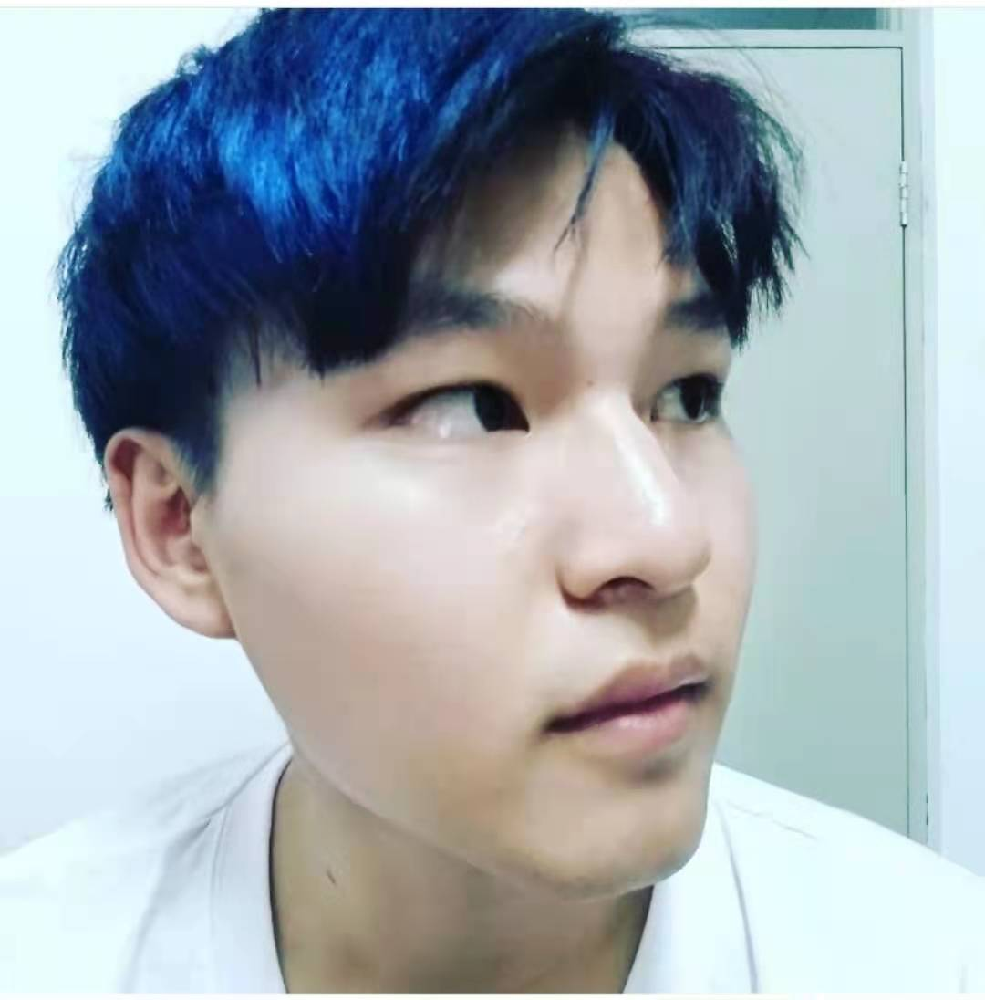

I will become a Computer Science Phd student of Temple University in Fall 2021.
Heng Fan
Assistant Professor
Department of Computer and information Sciences, Temple University
Office: SERC (Room 305), 1925 N. 12th Street, Philadelphia, PA, 19122
Email: qi.zhang@temple.edu
[Google Scholar] [LinkedIn] [ResearchGate]
Assistant Professor
Department of Computer and information Sciences, Temple University
Office: SERC (Room 305), 1925 N. 12th Street, Philadelphia, PA, 19122
Email: qi.zhang@temple.edu
[Google Scholar] [LinkedIn] [ResearchGate]
Short Bio
I am an incoming Assistant Professor in the Department of Computer Science and Engineering at University of North Texas. I obtained my Ph.D. in the CS department at Stony Brook University, advised by SUNY Empire Innovation Professor Haibin Ling. Prior to this, I was a PhD student at Temple University. I spent two and a half years as a master student (courses completed) in Huazhong Agricultural University, where I received my B.S. degree in 2013.
News

- 2021-08: TOTB has been released, go check it out here.
- 2021-07: A paper on transparent object tracking accepted to ICCV 2021.
- 2021-07: I will serve as an Area Chair for WACV 2022.
- 2021-07: A paper on visual object tracking accepted to IROS 2021.
- 2021-05: I passed my PhD dissertation. So much gratitude for everyone I met along this journey.
Quick links
TuPortal Temple CIS myAdvisor UNT Map Google gScholar gMap ACL IEEE